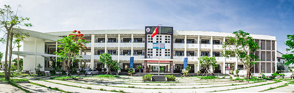

Thư ngỏ tuyển sinh 10 THPT Chuyên Nguyễn Bỉnh Khiêm - năm học 2016 - 2017

Lần cập nhật cuối lúc Thứ năm, 12 Tháng 5 2016 09:04 Viết bởi Administrator Thứ năm, 12 Tháng 5 2016 08:29

|
SỞ GD&ĐT QUẢNG NAM |
CỘNG HOÀ XÃ HỘI CHỦ NGHĨA VIỆT NAM Độc lập - Tự do - Hạnh phúc |
| Tam Kỳ, ngày 10 tháng 5 năm 2016 | |
THƯ NGỎ Về việc truyền tải thông tin tuyển sinh vào lớp 10 chuyên năm học 2016 - 2017 |
|
| Kính gửi : - Lãnh đạo Phòng Giáo dục và Đào tạo các thành phố, huyện và thị xã trên địa bàn tỉnh Quảng Nam; - Ban Giám hiệu các trường THCS trên địa bàn tỉnh.; - Quý phụ huynh và các em học sinh lớp 9; |
|
Trường THPT Chuyên Nguyễn Bỉnh Khiêm tỉnh Quảng Nam được thành lập ngày 06 tháng 8 năm 2002 theo Quyết định số 42/2002/QĐ-UB của Ủy ban nhân dân Tỉnh Quảng Nam. Mục tiêu của nhà trường là phát hiện những học sinh có tư chất thông minh, có năng lực vượt trội trong học tập và năng khiếu ở một số môn học để tiếp tục đào tạo, bồi dưỡng, phát triển trên cơ sở đảm bảo giáo dục phổ thông toàn diện, chú trọng giáo dục lòng yêu nước, tinh thần vượt khó, lòng tự hào, tự tôn dân tộc, phát huy khả năng tự học, nghiên cứu khoa học và sáng tạo; có ý thức rèn luyện sức khỏe nhằm hình thành nền tảng cơ bản xây dựng nguồn nhân lực chất lượng cao đáp ứng yêu cầu xây dựng tỉnh nhà và phát triển đất nước. Trường tọa lạc ở trung tâm thành phố Tam Kỳ (Số 02, Trần Đại Nghĩa, P.Tân Thạnh, Tp. Tam Kỳ, Quảng Nam) với tổng diện tích là 30.000 m2 gồm 02 khu giảng dạy với 30 phòng học đạt chuẩn. Ngoài ra còn có các khu chức năng phục vụ dạy học như hệ thống phòng tin học, phòng thí nghiệm thực hành Lý, Hóa, Sinh với đầy đủ các trang thiết bị hiện đại đáp ứng yêu cầu các giờ thực hành và bồi dưỡng học sinh giỏi các cấp. Trường còn được đầu tư xây dựng một thư viện đạt chuẩn quốc gia và một hội trường khang trang có sức chứa 400 người phục vụ tốt các hoạt động văn hóa, văn nghệ. Ngoài ra, trong thời gian đến, nhà trường xây dựng một khu nhà đa năng đảm bảo đáp ứng tốt các yêu cầu học tập, rèn luyện TDTT cho học sinh. Đặc biệt, nhà trường đã xây dựng được một khu Kí túc xá 5 tầng với khoảng 500 chỗ ở phục vụ cho các học sinh ở xa. Năm học 2014-2015, Trường THPT Chuyên Nguyễn Bỉnh Khiêm được UBND tỉnh Quảng Nam công nhận trường đạt chuẩn Quốc gia.
Từ đó đến nay, đội ngũ giáo viên của nhà trường không ngừng được bổ sung, đều đạt chuẩn và trên chuẩn với 60% có trình độ Thạc sĩ, 01 giáo viên là Tiến sĩ. Hội đồng giáo dục của nhà trường có 01 Nhà giáo ưu tú, nhiều thầy cô là Giáo viên dạy giỏi cấp tỉnh hoặc Chiến sĩ thi đua cấp tỉnh, nhiều thầy cô được vinh dự có mặt trong Hội đồng bộ môn của tỉnh và đội ngũ Thanh tra viên kiêm nhiệm. Hầu hết các giáo viên đều đã có bề dày kinh nghiệm, nhiệt tình và tâm huyết trong giảng dạy, có tinh thần trách nhiệm, luôn yêu thương hết lòng vì học sinh. Đội ngũ giáo viên đều hoàn thành xuất sắc nhiệm vụ năm học, nhiều thầy cô đã đạt được những thành tích cao trong công tác giảng dạy, bồi dưỡng học sinh giỏi, có nhiều kinh nghiệm trong công tác tư vấn hướng nghiệp cho học sinh các lớp cuối cấp. Các thầy cô cũng là cầu nối giữa các thế hệ cựu học sinh với các lớp học sinh đang học để từ đó có được sự hỗ trợ thiết thực cho các em trên con đường học tập và những định hướng cho tương lai. Sự phối hợp giữa Ban giám hiệu, các thầy cô giáo cùng các tổ chức đoàn thể trong nhà trường đã tạo ra một môi trường học tập thân thiện, tích cực, phát huy tốt sự năng động sáng tạo trong mỗi học sinh, giúp các em hình thành và phát triển kỹ năng trên nhiều phương diện để vững bước vào đời.
Học sinh của nhà trường trong những năm qua - đặc biệt là năm học vừa rồi - đã đạt được nhiều thành tích xuất sắc. Các em đã giành được 21 giải Học sinh giỏi quốc gia (toàn tỉnh đạt 28 giải). Có 02 học sinh vinh dự có mặt ở vòng 2 đợt thi chọn học sinh giỏi quốc gia đi thi quốc tế. Thành tích nổi bật đó giúp trường THPT chuyên Nguyễn Bỉnh Khiêm vượt lên xếp hạng thứ 2 cụm trường chuyên các tỉnh miền Trung và Tây Nguyên. Ở kỳ thi Olympic, các em học sinh cũng đã liên tục làm dày thêm bề dày thành tích nhà trường với nhiều huy chương vàng, bạc, đồng. Trong cuộc thi “Đường lên đỉnh Olympia”, 01 học sinh của trường chiếm được 01 suất của kỳ thi Quý. Tỷ lệ đỗ tốt nghiệp của học sinh nhà trường là 100%, tỷ lệ đỗ Đại học từ 90% trở lên. Các thế hệ học sinh của trường đã tiếp tục khẳng định được tài năng của bản thân và uy tín của nhà trường ở những môi trường học tập và làm việc tiên tiến cả trong và ngoài nước. Các du học sinh ở nước ngoài vẫn luôn hướng về và tiếp tục hỗ trợ nhà trường một cách tích cực.
Riêng về chế độ ưu đãi, học sinh trúng tuyển vào trường THPT Chuyên Nguyễn Bỉnh Khiêm sẽ được hưởng nhiều chính sách hỗ trợ ưu đãi của UBND tỉnh Quảng Nam như ở kí túc xá miễn phí, được hỗ trợ kinh phí học tập bình quân 1.000.000 đồng mỗi tháng. Ngoài ra, các em còn được nhận học bổng khuyến khích học tập và chế độ khen thưởng theo quy định của Nhà nước. Học sinh được tham gia các kỳ thi học sinh giỏi các cấp, có cơ hội được tuyển thẳng vào đại học nếu đạt giải trong kỳ thi học sinh gỏi cấp quốc gia. Học sinh Nguyễn Bỉnh Khiêm sẽ có nhiều cơ hội được nhận học bổng từ các nguồn kinh phí xã hội hóa giáo dục và cả những nguồn học bổng từ các tổ chức xã hội, tổ chức giáo dục quốc tế có uy tín. Đặc biệt, các học sinh giỏi của trường sẽ có cơ hội được ưu tiên tuyển thẳng vào một số trường đại học danh tiếng như Đại học Quốc gia Hồ Chí Minh. Ngoài ra, các em còn được tham gia các hoạt động văn hóa, xã hội và nghiên cứu khoa học, sáng chế kỹ thuật thông qua các câu lạc bộ đầy sôi động của nhà trường.
Tóm lại, trong hơn mười năm hình thành và phát triển, được sự quan tâm đầu tư đặc biệt của các cấp lãnh đạo tỉnh Quảng Nam và thành phố Tam Kỳ, được sự tin tưởng hỗ trợ của nhiều Phòng Giáo dục và các trường THCS trên toàn tỉnh, thầy và trò trường THPT Chuyên Nguyễn Bỉnh Khiêm đã không ngừng nỗ lực giảng dạy và tìm tòi nghiên cứu và đã xác lập được một số thành tích đáng tự hào, tạo dựng được một uy tín nhất định trong cụm trường chuyên miền Trung và Tây nguyên.
Chúng tôi mạnh dạn chuyển những thông tin trên đến quý Phòng Giáo dục và các trường THCS cũng như quý phụ huynh và học sinh với mong mỏi được chia sẻ và đặc biệt là được đón nhận sự tin tưởng từ quý vị. Ban Giám hiệu và đội ngũ cán bộ, giáo viên nhà trường xin hân hoan chào đón các học sinh đăng ký thi tuyển trong kỳ Tuyển sinh vào lớp 10 năm học 2016-2017. Nhà trường sẽ tạo mọi điều kiện để quý vị phụ huynh và học sinh đến đăng ký hồ sơ và tham gia thi tuyển thuận tiện nhất. Chúng tôi rất mong nhận được sự hỗ trợ của quý đơn vị trong việc truyền đạt thông tin tuyển sinh của Trường THPT Chuyên Nguyễn Bỉnh Khiêm đến với quý phụ huynh và các em học sinh.
Trân trọng cảm ơn sự hỗ trợ, quan tâm của quý cấp lãnh đạo các Phòng giáo dục và Đào tạo, Ban Giám hiệu các trường THCS, quý vị phụ huynh học sinh và các em học sinh.
Trân trọng kính chào!
|
HIỆU TRƯỞNG LÊ NGUYÊN BẢNG |
Thông báo tuyển sinh 10 THPT Chuyên Nguyễn Bỉnh Khiêm năm học 2016 - 2017
- 06/10/2016 07:35 - Đề thi minh họa kỳ thi THPT quốc gia năm 2017
- 29/09/2016 00:00 - Hội nghị Sơ kết thực hiện đề án phát triển hệ thốn…
- 08/09/2016 00:00 - Lễ ký kết hợp tác giữa Trường THPT Chuyên Nguyễn B…
- 04/06/2016 07:51 - Danh sách thí sinh thi tuyển sinh 10 THPT Chuyên n…
- 29/05/2016 09:41 - Danh sách thí sinh tuyển sinh 10 THPT Chuyên năm h…
- 21/04/2016 09:34 - Ưu tiên tuyển thẳng học sinh giỏi các trường chuyê…
- 05/04/2016 10:22 - Văn bản hợp nhất TT 02-2015 và 02-2016 Thông tin v…
- 29/03/2016 10:09 - Thông tin tuyển sinh đại học - cao đẳng hệ chính q…
- 23/03/2016 14:13 - Hướng dẫn tuyển thẳng - ưu tiên xét tuyển vào đại …
- 23/03/2016 14:03 - Thông tư số 03-2016-TT-BGDĐT về việc sửa đổi bổ su…